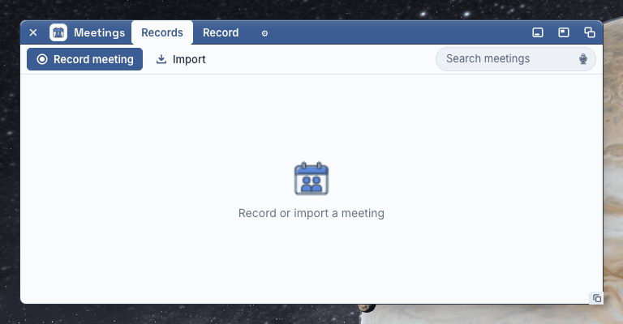
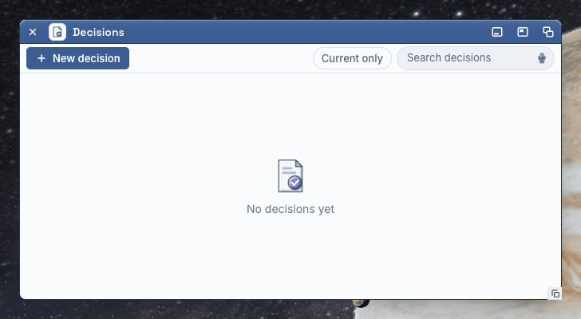
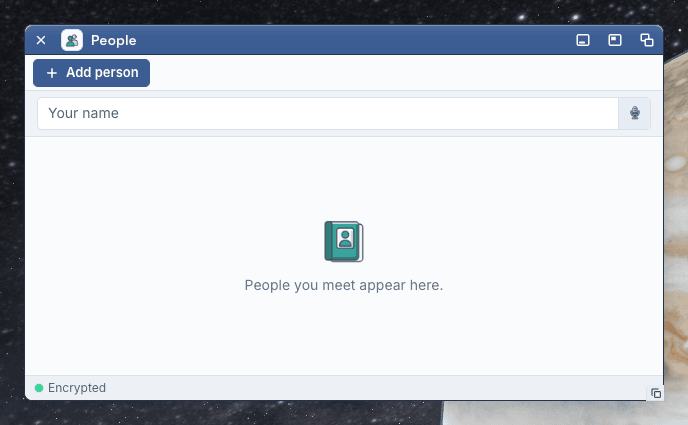
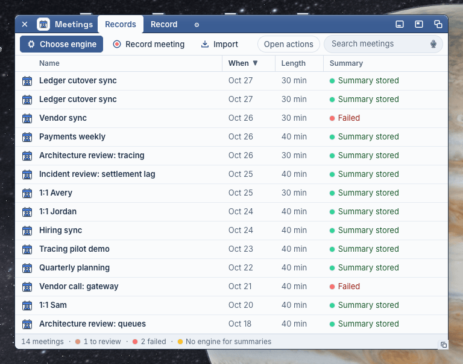

Delight, as a system
Owner 2026-10-27: “the windows are absolutely delightful, offer minimal friction.” Waves 1–3 put every window on the grammar; the atlas still scores Delight 1–2 almost everywhere. This canvas makes delight ONE system, so one kit change heals many windows: colour (each object kind owns a hue), motion (six named moments, each under 200 ms, opacity and colour only), objects (empty states and live lamps), depth (one named shadow scale) and ten small joys. Everything is in our material: the D objects, the Workbench blue, paper, the slate floor.
Recommendation Ship this week
Slice 1 — this lane, today
- Kind hue tokens (
--kind-*) indesign-tokens.json. - The glyph seat: every dense list row and Needs-you row puts its 20 px D object on a 24 px tile in its kind's wash; hover washes in the kind hue.
- A live lamp glows (status bars, DotWord); the save lamp pulses once on each save.
- The task box ticks: the check draws in (Note, CheckGadget).
- A window's body fades up under its toolbar on first paint.
- Done on a Needs-you row: the row settles out in green, then the list reads again.
- Empty states with objects: Meetings, Decisions, People (object on a kind halo, one line, one verb).
kit.css, objects.css, surface.css, gadgets.css, pullout.css; ObjectList data-kind; SurfaceState empty halo; StatusBar pulse; NeedsDrawer Done; the Note's checkbox widget. No new species.Slice 2 — next
- The day's light on Today (warm wash at morning, cool at evening) and the greeting by the hour.
- The count ticks down (status bar, title, dock badge) when a Done lands.
- Found tasks arrive in their kind's wash (the stagger exists; add the wash).
- The depth scale as tokens (
--depth-0…4); margin card, peek card and popovers move onto it. - The peek card and the margin card carry a 3 px rule in the kind hue.
Slice 3 — the small joys
- The ten one-liners below, one PR each where a hub fact is needed (⌘K's last-opened, the Note's first-line title, “Accepted · 3 open”).
- Empty states for every other collection (Projects, Automations, Agents, Activity, Memory) on the same form.
Audit: where delight lives, where the desk is grey
Delight lives here today
 The D objects on the floor and in the dock: flat, front-on, a 2 px bevel, real colour.
The D objects on the floor and in the dock: flat, front-on, a 2 px bevel, real colour. The dock glass a centred slate plate with 48 px objects, running dots, labels on hover.
The dock glass a centred slate plate with 48 px objects, running dots, labels on hover.- ▍The ember bookmark and the front window's deep blue title bar with its faint shine.
- The status lamp a dot and a word, saturated state colours (green, ember, red).
 People's initials discs eight soft hues, the same for the same name.
People's initials discs eight soft hues, the same for the same name.
The desk goes grey here
- ○Empty states are a 32 px icon and a sentence Meetings, Decisions, People: grey line, no verb, no colour.
- ≡Lists have no object colour 14 meeting rows, 14 identical blue glyphs; the hover is the same blue in every window.
- ✓A save just says Saved the lamp is lit before and after; nothing marks the moment.
- ☐A task box is the browser's checkbox it flips; nothing draws.
- ↓Found tasks arrive flat rows appear; no sign they are new.
- ✕Nothing celebrates a Done the row vanishes on the next read; the count jumps.
- ☀Today at 7 a.m. looks like Today at 7 p.m. a date, “Tue 27 Oct”, and the same paper.




Colour: each object kind owns one hue
The hue comes from the D object the kind already wears, so the list, the icon and the token agree. Each hue reads 4.5:1 or more on the paper, so it may carry a word (a person named in a note is already this teal: --wb-person-ink, Note canvas A). The hue is used in exactly four places: the glyph's seat, the row's hover wash, the selection wash when the list is not focused, and the 3 px rule of a peek or margin card. Never on a Button, never as a text block.
Person Meeting
Meeting Decision
Decision Note
Note Pull request
Pull request Agent
AgentA change from the brief, on purpose: the brief named people violet, meetings teal, decisions amber. The D objects already draw people teal, decisions violet and meetings blue, and the Note's person ink is teal. A hue that fights its own icon reads as a bug, so the hues follow the icons. Meetings take the sky blue of the floor's meeting glow, so they stay apart from Projects' Workbench blue.
Over a real window: Meetings, 1440, the seats, a hover, a selection
MeetingsLedger cutover syncOct 2730 minSummary storedVendor syncOct 2630 minFailedPayments weeklyOct 2640 minSummary storedArchitecture review: tracingOct 2630 minSummary storedIncident review: settlement lagOct 2540 minSummary stored1:1 AveryOct 2530 minSummary storedHiring syncOct 2440 minSummary storedTracing pilot demoOct 2340 minSummary storedQuarterly planningOct 2240 minSummary storedVendor call: gatewayOct 2140 minFailed1:1 SamOct 2040 minSummary storedArchitecture review: queuesOct 1840 minSummary storedPayments weeklyOct 1840 minSummary storedLedger kickoffOct 1730 minSummary storedNeeds you#412 Add the ledger freeze flagPR openFreeze the ledger on Nov 12To reviewVendor syncNo summaryCutover checklist2 tasks foundPriya Nair1:1 in 47 minMotion: six moments, each once, each under 200 ms
Rules: opacity and colour only on a measured element (the still fence); a box-shadow glow on a lamp is allowed (the lamp is not a control); no bounce, no overshoot, no transform on hover. Under reduced motion every moment is instant. Four moments per face at most (UX-CANON). The canvas loops each one; the product runs it once.
1. The save lamp pulses
On each save: the ok lamp's ring opens to 6 px and fades, 600 ms total glow, the word steps in. The first paint does not pulse. kit StatusBar · pulse
2. The task box ticks
The box fills blue (120 ms), the check draws in with its stroke (160 ms), the words go quiet. Only on a press, never on load. Note · CheckGadget
3. A window's first paint
The title bar and toolbar draw at once; the body fades up under them, 160 ms. Sections already rise in; this is the body. pullout.css · .desk-pullout-body
Freeze on Nov 12AcceptedAdopt OpenTelemetryTo review4. Found tasks arrive
The stagger exists (60 ms a row). New: each found row lands in the action's wash and the wash fades over 400 ms. Slice 2
5. Done on a Needs-you row
The hub says done; the row washes green and fades out, 180 ms; then the list reads again and the row is gone. The count ticks down (slice 2). NeedsDrawer · data-settle
#412 Freeze flagOpen PR6. The Record tile breathes
While a meeting records, the dock's Record tile breathes a red ring, 2.4 s a breath; it stops the moment recording stops. This is the one endless motion, and it says a true state. Exists: verify
Objects: an empty state is an object, one line, one verb
The D object at 64 px on an 88 px halo in its kind's hue; the line in the display face; the verb that makes the first one. The verb is the toolbar's primary verb again, in the quiet secondary form, because the eye is in the middle of the window. Live lamps glow (a 3 px ring in their tone); an idle lamp does not.
MeetingsDecisionsToday knows the hour Slice 2
The clock already drives Today. A warm wash falls from the toolbar before noon, a cool one after six; between, nothing. The date becomes a greeting: Tuesday morning · 27 Oct. Subtle: 16 % at the top, gone by 120 px.
Today#412 Add the ledger freeze flagPR open1:1 Priya / KarolNext in 47 minTodayPayments weeklySummary storedFreeze the ledger on Nov 12AcceptedDepth: one shadow scale, named
Five steps; every surface takes one. Today the desk has eleven shadow values for the same four jobs.
The small joys
- ⌘K's first result is the thing you opened last. The palette already ranks; add the last-opened object as the first row when the field is empty.
- The Note's title offers its first line. A new note with no title takes its first line as the title, in grey, until you type one.
- Today greets by the hour: “Tuesday morning”. The date at the toolbar's right becomes the greeting.
- A decision's Accept says “Accepted · 3 open” in the status bar. The receipt counts what is left, not what happened.
- Done settles the row in green, then the count ticks down. Slice 1
- A save pulses the lamp once. Slice 1
- The task box draws its check. Slice 1
- A failed summary's Try again turns the red dot blue while it runs, then green. The dot tells the whole story; no toast.
- The last meeting of the day ends with “That is the day”. Today's status bar, after the last meeting, once.
- A person's row shows their next 1:1 in their own teal. “1:1 in 2 days” in the person ink, not grey.
The rules, as kit doc comments
/** DELIGHT (2026-10-27) — the kind hue. Each object kind owns ONE hue * (--kind-meeting, --kind-project, --kind-person, --kind-decision, * --kind-note, --kind-pr, --kind-action, --kind-agent), taken from its * D object. The hue is used in four places only: the 20 px glyph's 24 px * seat (13 % wash, 22 % rule), the row's hover wash (8 %), the selection * wash of a list that does not hold focus (14 % + a 3 px kind rule), and * the 3 px rule of a peek or margin card. Never on a Button, never as a * text block. A focused list's selection stays the selection blue. */ /** DELIGHT — motion. Six named moments: the save pulse, the task tick, * the body's first paint, found rows arriving, the Done settle, the * Record breath. Each runs once (the breath runs while recording), is at * most 200 ms (the pulse's glow 600 ms on a lamp, not a control), moves * opacity, colour or a lamp's box-shadow only, never a measured box, and * is instant under prefers-reduced-motion. No bounce, no overshoot. */ /** DELIGHT — an empty state is an object: the kind's 64 px D object on * an 88 px halo, one line in the display face, one verb (the window's * making verb, secondary form). SurfaceState empty with emptyImage + * emptyKind. */ /** DELIGHT — a live lamp glows: a lit dot (ok, info, ask) in a status bar * or a DotWord wears a 3 px ring in its tone. Idle and fail do not glow. */